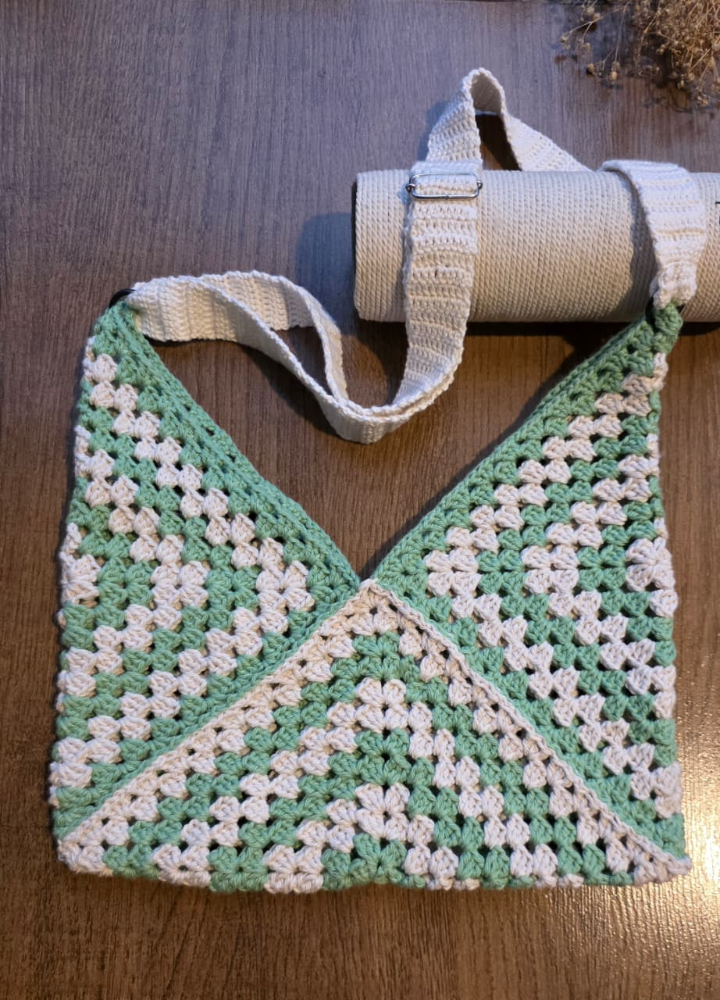

Bags
Sage Granny Tote
Sage & cream
Tote bag
4.5mm hook
This oversized granny stitch tote is one of my favourite makes so far. The soft sage green paired with cream gives it a clean, timeless look that works for everyday outings.
Pro tip
Instead of cutting your yarn every time you switch colours, simply drop the working yarn and pick it back up when you need it again. This technique dramatically reduces the number of yarn ends you'll have to weave in later and makes finishing the project much quicker.
Tutorials
Follow this tutorial
Video walkthrough I used while making this tote.
▶Sage tote tutorial
Watch tutorial
Supplies I used
Tools & Materials
List of exact yarn, hooks, and accessories used for this bag.
This page contains Amazon affiliate links. As an Amazon Associate I earn from qualifying purchases — at no extra cost to you. Thank you for supporting Loopsoy!